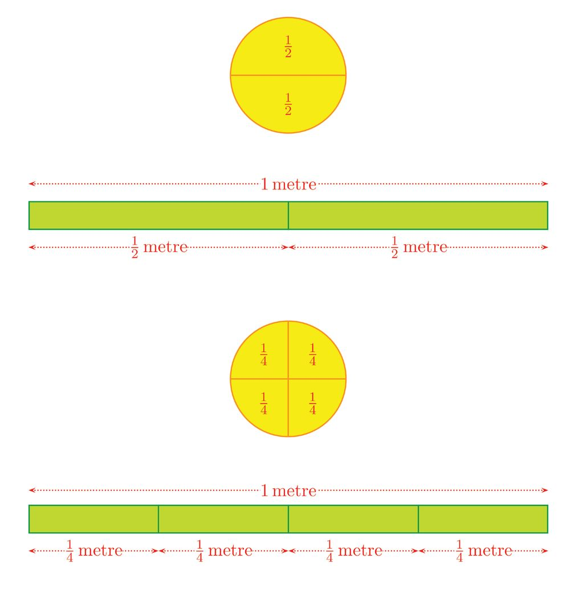
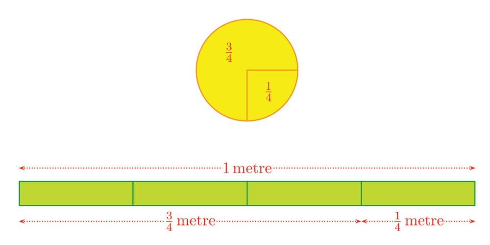
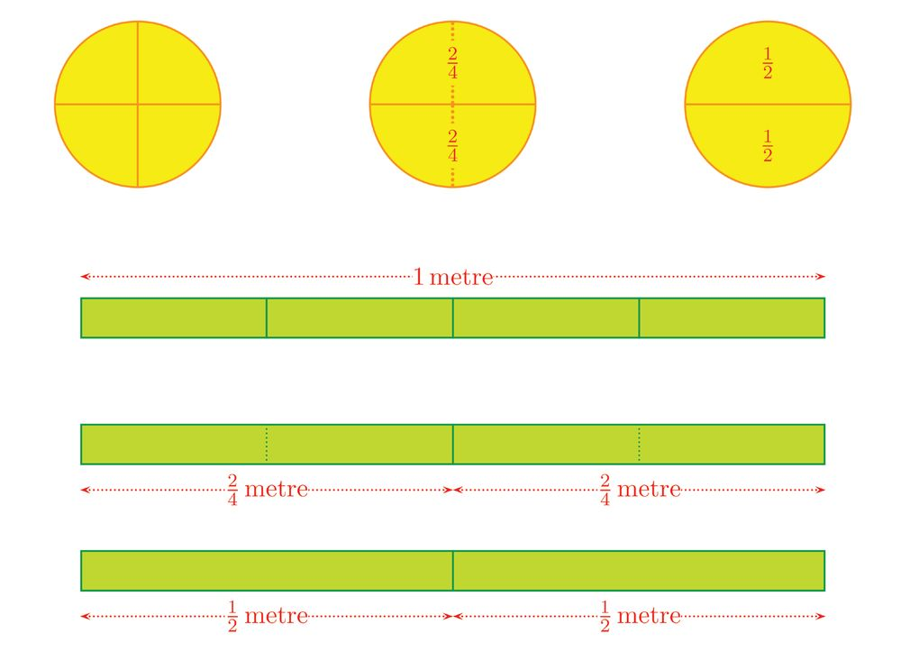
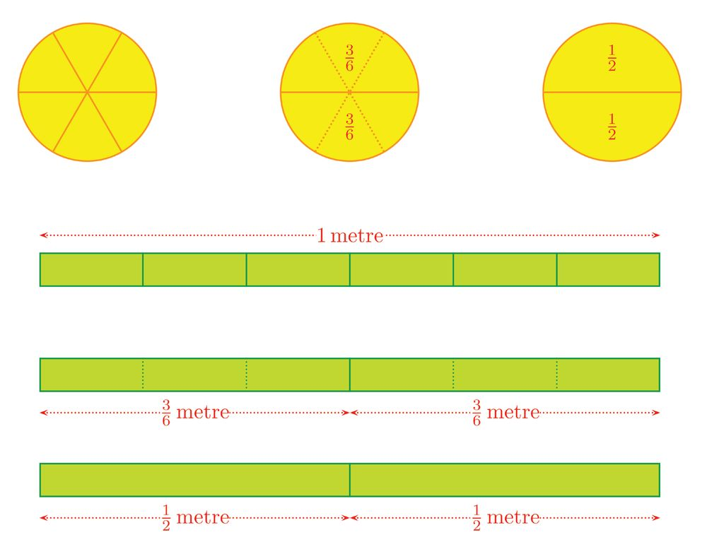
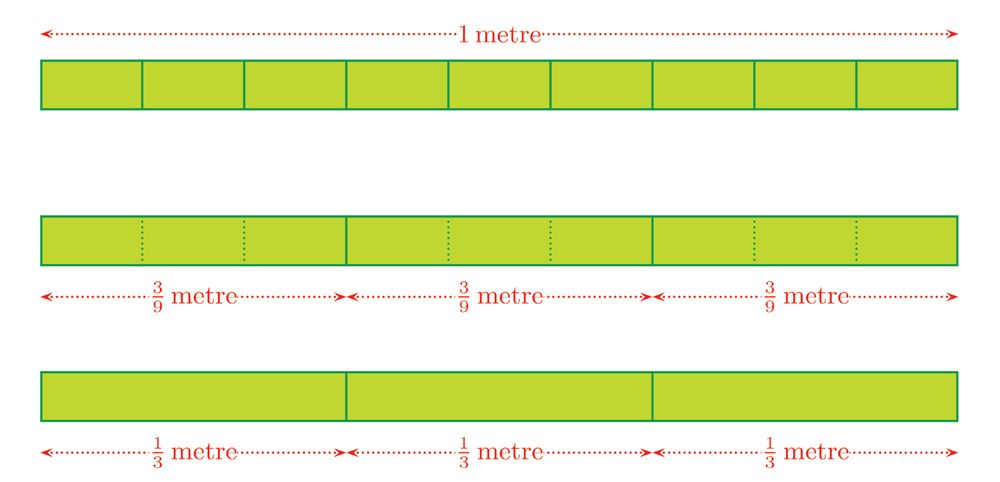
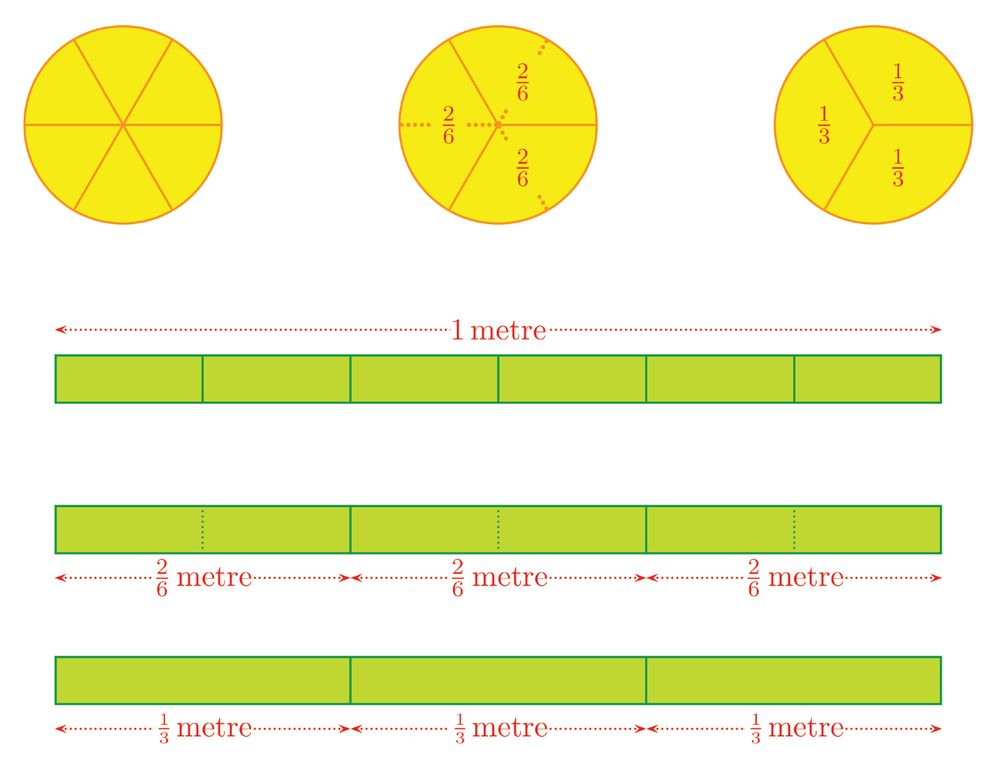
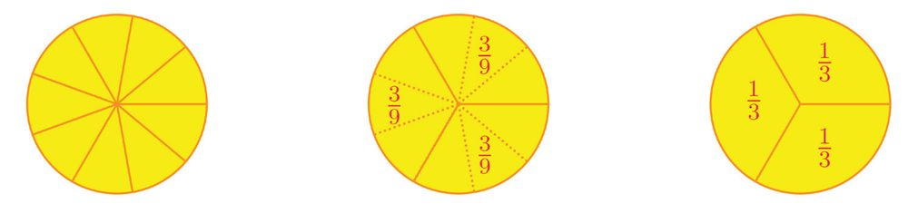
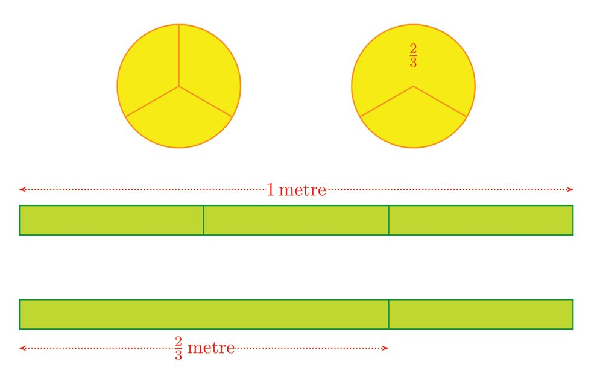
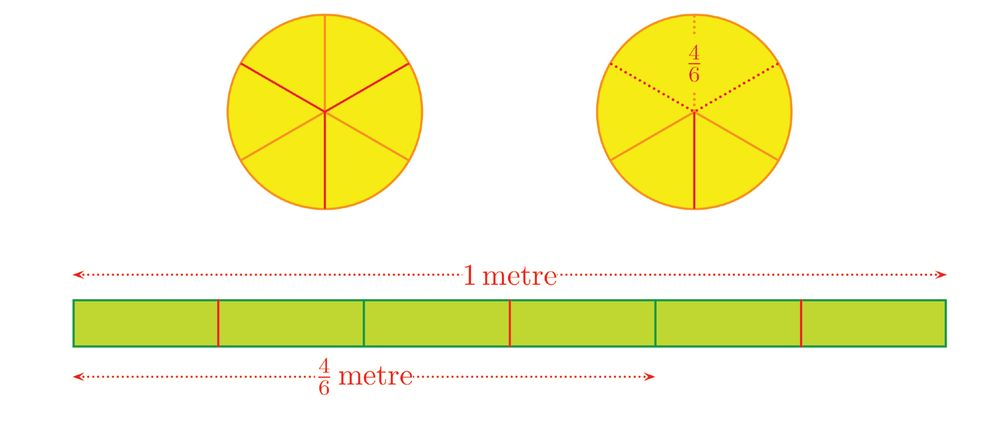

2 One Fraction Many
One Fraction Many Forms
Forms
Numerator and denominator We have seen in class 5, how parts of a measure can be written as fractions:
19



2 One Fraction Many
One Fraction Many Forms
Forms
Numerator and denominator We have seen in class 5, how parts of a measure can be written as fractions:
19



Standard VI - Mathematics
We have also seen that fractions in different forms can be the same measure. For example, 2 1 4 and 2 give the same part:
20


One Fraction Many Forms
Similarly we have seen 36 is also 12 .
Thus we have 1 = 2
2 = 4
3 6
How do we get different forms of 12 ? •
If an object or a measure is divided into two equal parts, each is 12 of the whole.
•
What if each of these two equal parts is again split into two equal parts? ∗
2 × 2 = 4 equal parts in all.
∗
To get 12 of the whole, we must take 2 of these.
∗
1 = 2 2 4
21


Standard VI - Mathematics
•
What if each of the two equal parts is split into three equal parts? ∗
2 × 3 = 6 in all
∗
To get 12 of the whole, we must take 3 of these.
∗
1 = 3 2 6
We can continue like this as many times as we want. For example, suppose we divide each of the two equal parts into 50 equal parts 50 × 2 = 100 equal parts in all.
To get 12 of the whole, how many of these should we take? What another form of 12 do we get from this? 50 In the fraction 100 the lower number 100 shows the number of equal parts we have divided the whole into ; and the upper number 50 shows how many of these equal parts we take. 50 50 is called the numerator and 100 is called the denominator of the fraction 100 .
Now look at the many forms of 12 1 2 3 4 2 , 4 , 6 , 8 , ...
In all these, the denominators 2, 4, 6, 8, ... are multiples of 2; and the numerators 1, 2, 3, 4, ... the numbers by which 2 is multiplied. Next let's look at 13 . We have seen that 13 and 62 give the same part.
22




One Fraction Many Forms
In what other ways can we write 13 ? What if we split a circle into 9 equal parts? How many parts should we take to get 13 of the whole?
In the same manner, if we divide 1 metre into 9 equal parts and take three of them, we get 13 metre.
23


Standard VI - Mathematics
We can continue this also, as in the case of 12 . •
If an object or a measurement is divided into three equal parts, each is 13 of the whole.
•
What if each of these three equal parts is again split into two equal parts?
•
∗
2 × 3 = 6 equal parts in all.
∗
To get 13 of the whole, we must take 2 of these.
∗
1 = 2 3 6
What if each of the three equal parts is split again into three equal parts? ∗
3 × 3 = 9 in all
∗
To get 13 of the whole, we must take 3 of these.
∗
1 = 3 3 9
What if we divide each of the 3 equal parts into 25 equal parts? How many parts in all ? How many of them should be taken to get 13 of the whole? What another form of 13 do we get from this? Now look at these forms of 13 : 1 2 3 4 3 , 6 , 9 , 12 , ...
In all these, the denominators 3, 6, 9, 12, ... are multiples of 3 ; and the numerators 1, 2, 3, 4, ... are the numbers by which 3 is multiplied.
(1) Find the fractions specified below : (i) The form of 12 with denominator 24 (ii) The form of 12 with numerator 24 (iii) The form of 13 with denominator 24 (iv) The form of 13 with numerator 24 (v) The form of 14 with numerator 100 (2) Write three different forms of 14 .
24



One Fraction Many Forms
(3) For each of the pair of fractions below, find three forms with the same denominator: (i) 12 , 13
(ii) 12 , 14
(iii) 13 , 14
(4) Does 13 have another form with denominator 10, 100 or 1000 ? Give reasons.
Let's look at another kind of fractions. How do we find different forms of 32 ? We get 32 by dividing an object or measure into 3 equal parts and taking 2 of these:
What if we divide each of the three equal parts again into two equal parts?
25


Standard VI - Mathematics
2 × 3 = 6 equal parts in all; and the 2 large equal parts taken earlier now become 2 × 2 = 4 small equal parts.
In other words, as the total number of equal parts is doubled, the number of parts taken also is doubled. 2 = 4 3 6
This can also continue. What if we divide each of the first 3 equal parts into 3 equal parts ? •
3 × 3 = 9 equal parts in all
•
The 2 equal parts taken first become 3 × 2 = 6 equal parts.
That is, as the total number of equal parts is tripled, the number of parts taken also is tripled. Thus in all the different forms of 32 , the denominators are all multiples of 3; and the numerators are 2 multiplied by the number by which 3 is multiplied. We can compute different forms of any fraction like this. In general, we can say this: Multiplying the numerator and denominator of a fraction by the same natural number gives a form of the same fraction.
Now can't you fill up the following table, by multiplying the numerator and denominator by a number? Fraction
Multiplier
Numerator
Denominator
Another form
2 3
4
8
12
2 = 8 3 12
2 3
6 12
3 4 3 4
26
12

One Fraction Many Forms
Let's look at another kind of problem: Can we write the fraction 10 15 in another form with a smaller numerator and denominator? Both 10 and 15 have 5 as a factor. 10 = 2 × 5
15 = 3 × 5
In other words, we get 10 and 15 by multiplying 2 and 3 by the same number 5. So by the result above, 10 = 2 15 3
How do we reduce 18 24 like this? 18 and 24 are even numbers; that is, both have 2 as a factor: 18 = 9 × 2 24 = 12 × 2 So, as above, 18 = 9 24 12
Do 9 and 12 have a common factor? 3 is a factor, right? So, 9 = 3 12 4
Thus, 18 = 24
9 = 12
3 4
Like this, if the numerator and denominator of any fraction have a common factor, then we can remove this to get another form with smaller numerator and denominator. In general, we have this result : If the numerator and denominator of a fraction have a common factor, then dividing them by this common factor gives a form of this fraction.
In the second example above, we first divided the numerator and denominator of 18 24 by 9 the common factor 2 and wrote it as 12 ; then divided the numerator and denominator
again by 3 to reduce it further and wrote it as 34 . We can't make the numerator and denominator still smaller, can we? Why? 3 4
is called the form of 18 24 in lowest terms.
27


Standard VI - Mathematics
In general , the form of a fraction in lowest terms is got by removing all common factors of the numerator and denominator by division. Write each of the following fractions in lowest terms: (i) 32 64
27 (ii) 81
(iii) 30 45
45 (iv) 12 21 (v) 54
Fraction as division If a 2 metres piece of rope is divided into 3 equal pieces, what would be the length of each piece? We have seen in class 5 that it is 32 metre (The section Fractional share of the lesson Fractions). What if we cut 6 metres long rope into 3 equal pieces? This we compute as a division: 6÷3=2
We have seen in class 5 that, this too can be written as a fraction (The section Fraction and division of the lesson Fractions). That is, 6 ÷ 3 = 63 = 2
Any division can be written as a fraction like this. For example: 8÷2 = 4 15 ÷ 3 = 5 30 ÷ 10 = 3
8 2 = 4 15 3 = 5 30 10 = 3
Since any natural number divided by 1 gives that number itself, we can write all natural numbers as fractions: 1÷1 = 1
1 = 11
2÷1 = 2
2 = 12
3÷1 = 3
3 = 13
This raises a question: In fractions written as divisions also, can we remove the common factors of the numerator and denominator?
28

One Fraction Many Forms
This too can be done, as we have seen in class 5 (the section Common factors of the lesson Within Numbers). For example to compute 12 ÷ 6, we first write these numbers as 12 = 6 × 2 6 = 3×2 Then we can remove the common factor 2 and do the division as 12 ÷ 6 = 6 ÷ 3 = 2
These computations can be written in the form of fractions as 12 = 6
6 # 2 = 3 # 2
6 = 2 3
So, natural numbers can be written as fractions in various ways : 1 2 3 = = 1 = = ... 1 2 3 2 4 6 = = 2 = = ... 1 2 3 3 6 9 = = 3 = = ... 1 2 3
Again, we have seen in class 5 that divisions which involve remainders can also be written as fractions (the section New fractions of the lesson Fractions). For example, if 3 cakes are divided equally between 2 children, each gets a full cake and half a cake. That is 1 12 1 12 cake. This also we can write as a fraction: 3 ÷ 2 = 32 = 1 12
In such fractions also, can we remove common factors of the numerator and denominator? For example, see this problem : If 6 cakes are divided equally among 4 children, how much would each get?
29


Standard VI - Mathematics
After giving one cake to each , there will be 2 cakes left:
If each of these is cut into half, there would be 4 pieces, each of them 12 of a cake:
If these pieces are also distributed one to each, then what each gets altogether is 1 12 cake:
30


One Fraction Many Forms
This can be done in another way: To divide 6 cakes between 4 children, we can split the kids into 2 sets of 2 and give 3 cakes to each set:
In each set, when one cake is given to each of the 2 kids, one cake will be left:
If the remaining one cake in each group is cut into half and a piece given to each of the two children, then everyone gets half a cake more.
What did we see here? 6 = 4
3 1 = 12 2
31


Standard VI - Mathematics
Let's look at another problem: If 33 litres of milk is divided equally between 12 persons, how much would each get? Here we first split 33 and 12 like this: 33 = 11 × 3
12 = 4 × 3
So we can think like this, as in the previous problem: Split the 12 persons into 3 groups of 4 and give 11 litres to each group. When the 4 persons in each group divide the 11 litres equally among themselves, each person gets 11 4 litres. That is, 33 = 11 12 4
Now how do we write 11 4 as a whole number and a fraction? First we divide 11 by 4 and write as multiple and remainder: 11 = (2 × 4) + 3 Dividing the remainder 3 also by 4, we can write 3 ÷ 4 = 34 . So, 33 = 12
11 = 4
3
24
Thus each gets 2 34 litres. In general, if we remove common factors of the numerator and denominator of a fraction, then we get another form of the same fraction. That is, in writing divisions with remainders as fractions, we can remove common factors of the numerator and denominator.
(1) 20 litres of water is used to fill 8 identical bottles. How much litres of water is there in each bottle? (2) A rope of length 140 centimetres is cut into 16 equal pieces. What is the length of each piece? (3) If 215 kilograms of rice is divided equally among 15 people, how much kilogram of rice would each get?
32